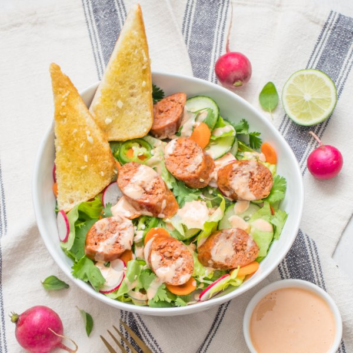

Sausage Banh Mi Salad with Jalapeños, Herbs & Garlic Crostini

Nutrition (per serving)
604.6 kcalCalories
23.5 gProtein
27.9 gCarbs
45.2 gFat
Full nutrition table
| Calories | 604.6 kcal |
| Total fat | 45.2 g |
| Saturated fat | 11.3 g |
| Trans fat | 0.4 g |
| Cholesterol | 85.6 mg |
| Sodium | 873.1 mg |
| Carbohydrates | 27.9 g |
| Fiber | 6.1 g |
| Sugars | 13.8 g |
| Protein | 23.5 g |
| Potassium | 964 mg |
| Calcium | 122.1 mg |
| Iron | 4.2 mg |
| Vitamin A | 179.4 IU |
| Vitamin C | 34.1 mg |
| Vitamin D | 26.4 IU |
Cookware
Ingredients
- 1 headbutter (Boston) lettuce
- 2 mediumcarrots
- 1 small bunchcilantro
- 1English cucumber
- 1 small pkgfresh mint
- 2 clovesgarlic
- 2jalapeño peppers
- 1lime
- 4pork sausages
- 1 bunchradish
- 2whole grain buns or rolls
- chili-garlic sauce
- extra virgin olive oil
- fish sauce
- honey
- mayonnaise
Steps
- Preheat oven to 425°F.
- Wash and dry the fresh produce.1 head butter (Boston) lettuce
2 medium carrots
1 bunch radish
1 English cucumber
2 jalapeño peppers
1 small pkg fresh mint
1 small bunch cilantro
1 lime - Place sausages on a baking sheet pan and place in the oven (it doesn't have to be fully heated); bake until sausages are cooked through, 12-15 minutes.4 pork sausages
- Meanwhile, chop or tear lettuce into bite-sized pieces and transfer to a large salad bowl.
- Peel and thinly slice carrots into rounds; add to the bowl with the lettuce.
- Trim and thinly slice radishes; add to the bowl.
- Trim and thinly slice cucumber into rounds; add to the bowl.
- Trim and thinly slice jalapeños into rounds; add to the bowl. (Be careful, with jalapeños, do not touch your eyes and ensure you wash your hands after handling or wear gloves while preparing.)
- Pick mint leaves off the stems. Shave cilantro leaves off the stems; discard stems and add leaves to the bowl. Toss to combine the salad and set aside.
- When the sausages are done cooking, remove to a cutting board. Slice into ½-inch thick pieces, at an angle, and set aside.
- Peel and mince garlic.2 cloves garlic
- Slice rolls in half and place on the baking sheet, cut-side up. Drizzle with oil, then sprinkle with minced garlic. Place in the oven and toast until golden, 4-5 minutes. Remove from the oven and cut in half.2 whole grain buns or rolls
2 tbsp extra virgin olive oil - Meanwhile, juice the lime into a small bowl. Add mayo, honey, chili-garlic sauce, and fish sauce; whisk to combine the dressing.¼ cup mayonnaise
4 tsp honey
4 tsp chili-garlic sauce
2 tsp fish sauce - To serve, divide salad, sausage, and crostini between plates or bowls. Drizzle with dressing and enjoy!